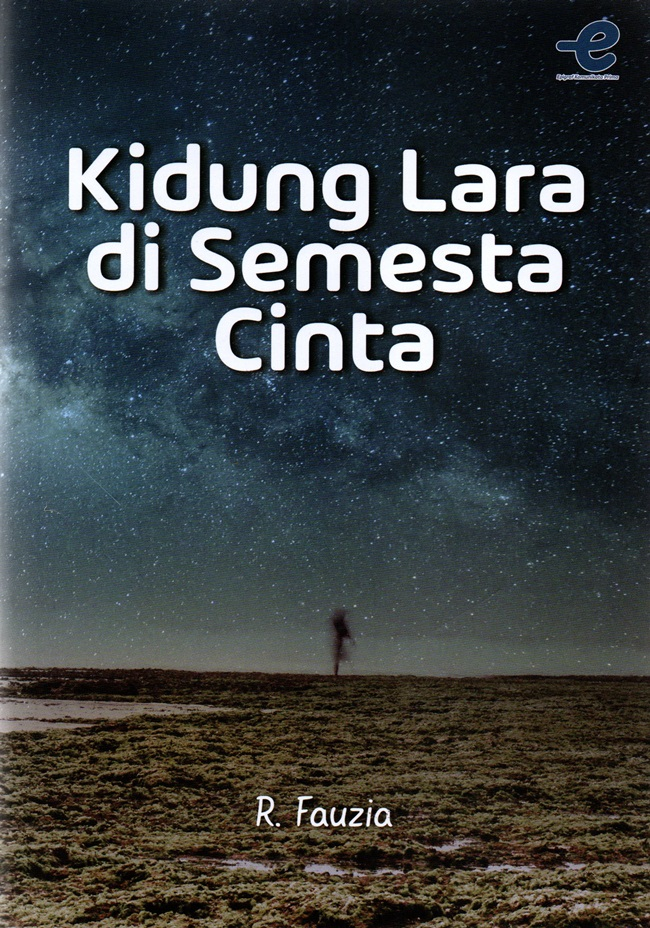

Koleksi Buku Lengkap

Selesai
Novel: Kidung Lara Semesta Cinta
Oleh: R. Fauzia
"Awal mula baca buku ini, aku tertarik karena covernya yang dipenuhi bintang-bintang dengan langit malam. Setelah aku baca judulnya, rasa penasaranku cukup naik dan aku memilih duduk manis sambil membacanya. Terdengar cukup klasik seperti cerita romansa pada umumnya, jadi Laras ini tokoh yang cukup lurus-lurus aja dengan perasaan, pas dia kerja ketemu sama Bayu muncullah perasaan yang bisa dibilang cinta. Nah, dari pertemuan itu Laras jadi jatuh suka sama Bayu, Bayu pun begitu. Hubungan asmara mereka Happy Ending kok walaupun cukup rumit ya hehe mulai dari hadirnya masa lalu Bayu sampai teman masa kecil Laras yang selalu menyukai dan setia di sisi dia kapanpun, tapi untuk kisahnya sampai habis, kalo kalian tertarik bisa langsung baca aja ya bukunya hehe. Anw, aku baca dan pinjam buku ini dari Perpusnas RI!
"

Selesai
Novel: Bandung After Rain
Oleh: Wulan Nur Amalia
"Ceritanya manis banget, cocok buat yang suka suasana Bandung. Yaps, siapa sih yang ga asing dengan kota tersebut? Fyi, aku pun sesuka itu sama Bandung walaupun belum pernah kesana, tapi vibes kotanya cukup tenang dan cuacanya juga bagus. Novel tersebut menceritakan tentang pasangan yang sudah menjalin hubungan selama 6 tahun, namun sayangnya kandas disaat anniversary. Sangat disayangkan bukan? Alasan klise pun terjadi karena satu kata yang menyakitkan, yaitu ‘bosan’. Tentu mendengar kata tersebut dari Hema membuat Ra sakit hati, meskipun begitu Ra saat itu ingin memperbaiki hubungannya dan bertanya apakah Hema tidak akan menyesal, sayangnya lelaki itu tetap tegas dengan keputusannya. Tapi, hubungan mereka sampai halaman akhir Happy Ending kok! Kalau kalian tertarik melihat gimana sulitnya Hema mengajak Ra kembali untuk balikan, kalian bisa banget langsung baca bukunya ya!
"

Belum Selesai
Novel: Nikola Maldini
Oleh: Kale
"Pertama kali aku liat buku ini tuh pas lagi ada cuci gudang di Gramedia Matraman, aku tertarik beli bukunya karena covernya. Covernya itu punya artstyle yang bagus banget dan aku jadi tertarik untuk baca bukunya. Overall, buku ini menceritakan tentang dinamika perasaan anak SMA, dimana Nikola disini merupakan cowok yang pendiam dan hobi menulis. Hari-harinya yang sunyi seketika berubah semenjak Maldini ada dan duduk di sampingnya. Aku belum baca sampai habis bukunya, karena padatnya kegiatan yang aku lakukan, tapi sepertinya ini happy ending. Kalau penasaran kalian bisa banget ikutan baca yups!"

Belum Selesai
Non Fiksi: The Whole-Brain Child
Oleh: Daniel J. Siegel & Tina Payne Bryson
Parenting | Psikologi Anak
"Membantu banget buat memahami cara kerja otak anak biar kita nggak gampang emosi. Aku sangat antusias dan minat banget belajar tentang perkembangan kognitif anak dan juga psikologi anak. Sehingga, mendasari antusias dan minatku, aku tertarik untuk baca buku ini. Dan benar, isinya sangat daging dan menarik untuk dibaca sekaligus untuk dipahami. Dimana buku ini menceritakan dan memberi pengetahuan tentang bagian otak anak dilengkapi dengan 12 strategi untuk mendukung perkembangan otak anak. Aku belum baca sampai habis, saat ini baru sampai bab 3 karena aku membaca sambil menulis bagian yang penting. Ilmu baru tentu saja aku dapatkan dari buku ini, yaitu cara membedakan anak tantrum dengan otak atas dengan anak tantrum dengan otak bawah. Dan memang benar kalau bagian otak itu sangat banyak dengan fungsi yang berbeda, untuk parenting, buku ini juga bisa digunakan untuk mendukung stimulasi perkembangan kognitif anak. Sehingga aku berharap kedepannya siapapun yang menjadi orang tua dapat mengatur emosinya dan sadar akan tahapan perkembangan anaknya, juga tidak dengan mudahnya memberi ponsel genggam agar anaknya tenang, karena pada akhirnya itu hanya akan menjadi boomerang. Anw, kalau aku udah baca bukunya dengan lengkap, aku bakal share lagii ya!"

Reading List
Non Fiksi: Seni Membuat Hidup Lebih Ringan
Oleh: Francine Jay
Self-improvement | Minimalis
"Buku ini masuk daftar antrian sejak 2024, denger-denger bagus buat belajar hidup simpel dan aku juga suka hidup simpel. Semoga tahun ini aku bisa baca bukunya, kalau aku udah selesai baca nanti aku tak masukkan reviewnya disini yaw!"

Belum Selesai
Non Fiksi: Pendidikan Kaum Tertindas
Oleh: Paulo Freire
Pendidikan | Filsafat
" Aku tertarik sama buku ini karena salah satu dosen yang menunjukkan betapa hebatnya pemikiran Paulo Freire, aku sudah sempat baca beberapa halaman namun belum sejauh itu. Isinya cukup berat tapi penting banget buat yang peduli sama dunia pendidikan."

Reading List
Fiksi-Sejarah: Laut Bercerita
Oleh: Leila S. Chudori
Sejarah | Aktivis
"Buku ini sangat populer, nggak sabar mau baca perjuangan Biru Laut."

Reading List
Novel: Septihan
Oleh: Poppi Pertiwi
"Salah satu buku fiksi yang lagi masuk list tunggu aku! Aku beli buku ini ikut PO nya karena fomo banget baca kelanjutannya, soalnya waktu itu aku bacanya di wattpad tapi versi gak lengkap. Pas udah beli versi lengkapnya, aku ga punya banyak waktu luang huft.."